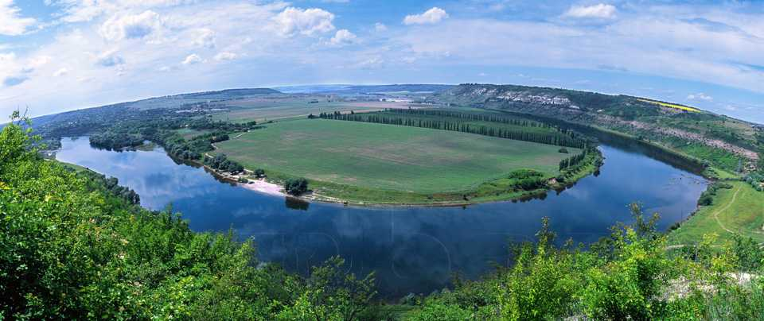

| Головна | Моя Україна | Моя країна-найкраща у світі |
Україна — моя Батьківщина
Україна — моя Батьківщина і я пишаюсь тим що я українець.В Україні я народився, зростаю, навчаюся, звідси мій рід. Я люблю її мальовничі простори, лани, поля, ріки, ліси і гори…
Щоб полюбити свою країну її треба пізнати багато подорожуючи.
Вам доводилось стояти на верхівці муру Хотинської фортеці на Дністріі? Її висота сягає сорока метрів, товщина стін п’яти. Це велична споруда, одна з пам’ яток архітектури. Відчуваєш подих століть, торкаєшся не просто теплого каменю, а нашої історії.
А ви підіймались на гору Говерлу в Карпатах? Це найвища точка України. Як приємно стояти відчуваючи свист вітру у вухах, а пегед очима скільки бачить око — величні гори.
А в сорочинцях були, де все як у Гоголя… Очі розбігаються від розмаїття товарів українського виробництва. Обов’язково везеш додому щось на згадку про край де був.
А петриківський розпис бачили? Він зберігся ще з сімнадцятого століття, Розвивається в наш час і відомий в усьому світі. Я був у селі Петриківка і бачив ,як працюють художники. На скляну палітру наносять всі кольори веселки — це гуаш. Спочатку майстриня робить легенький ескіз олівцем, а потім починає чаклувати пензлями різної товщини. Її рухи впевнені і плавні. Мазки лягають швидко один за одним утворюючи казковий рослинний орнамент, дивовижної краси птахів.
Кожна робота неповторна, за нею стоїть автор, у нього свій стиль письма. Тому свої роботи майстер побачить серед тисяч екземплярів, а підробки всі інші.
Я люблю наші українські витвори мистецтва, наші українські пісні і приказки , мудрі казки, твори видатних письменників,бо я українець.
Якщо хтось не іменує себе українцем — це його шлях і вибір, виховання.
Я хочу бачити свою країну квітучою, де кожна людина відчуває себе щасливою.